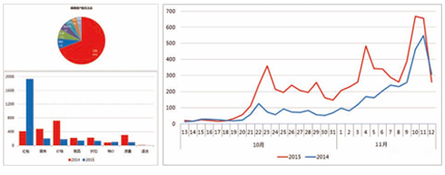
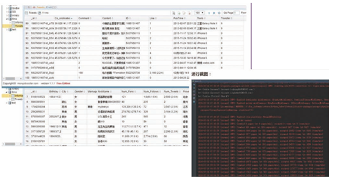

-
校区地址：大同市魏都大道富临宝城B-1509
咨询电话：0352-5117333
面授课程：iOS培训、Android培训、HTML5培训、UI培训、PHP培训、JavaEE培训、好程序员
-

扫码关注
大同清鸟培训官方公众号
大数据将为社会带来三方面变革：思维变革、商业变革、管理变革，各行业将大数据纳入企业日常配置已成必然之势。
国际数据公司IDC预测，到2020年，企业基于大数据计算分析平台的支出将突破5000亿美元。目前，我国大数据人才只有46万，未来3到5年人才缺口达150万之多。
前程无忧大数据岗位搜索
共29854个职位满足条件
智联招聘大数据岗位搜索
共27627个职位满足条件
猎聘网大数据岗位搜索
共1000+个职位满足条件
拉勾网大数据岗位搜索
共500+个职位满足条件
深度破译趋势密码 高在起点赢在前沿
查询科技走向01技术层面
1.紧贴行业发展、着眼未来需求 2.开发、收集、储存、计算一站到底 3.爬虫技术挖掘数据价值，直击大数据核心、助攻求职竞争力
02现实层面
1.横跨云计算、大数据所有实用内容，数据挖掘处理意义非同凡响 2.淘宝、京东等电商精准推送 3.海量数据采集、预测个人行为、细思极恐，这是一项可怕但避不开的技术
03发展层面
1.其实就是未来层面、甚至是科幻层面 2.行为数据化、资产数据化、更多衍生的商业模式 3.人工智能、根据大数据蕴藏的事实、预测未来
7大授课阶段 全力培养未来高端大数据人才
课程详情Java语言基础
HTML、CSS与JavaScript
JavaWeb和数据库
Linux基础
Hadoop生态体系
Spark生态体系
Storm实时开发
项目案例
- Java的发展历史
- Java的应用领域
- Java语言的特性
- Java面向对象
- Java性能分类
- 搭建Java环境
- Java工作原理
- Eclipse简介与下载
- 安装Eclipse的中文语言包
- Eclipse的配置与启动
- Eclipse工作台与视图
- “包资源管理器”视图
- 使用Eclipse
- 使用编辑器编写程序代码
- Java主类结构
- 基本数据类型
- 变量与常量
- Java运算符
- 数据类型转换
- 代码注释与编码规范
- Java帮助文档
- 复合语句
- 条件语句
- if条件语句
- switch多分支语句
- while循环语句
- do…while循环语句
- for循环语句
- String类
- 连接字符串
- 获取字符串信息
- 字符串操作
- 格式化字符串
- 使用正则表达式
- 字符串生成器
- 数组概述
- 一维数组的创建及使用
- 二维数组的创建及使用
- 数组的基本操作
- 数组排序算法
- Java的类和构造方法
- Java的对象、属性和行为
- 数字格式化与运算
- 随机数与大数据运算
- 类的继承与Object类
- 对象类型的转换
- 使用instanceof操作符判断对象类型
- 方法的重载与多态
- 抽象类与接口
- 流概述与File类
- 文件 输入/输出流
- 缓存 输入/输出流
- Class类与Java反射
- Annotation功能类型信息
- 枚举类型与泛型
- 创建、操作线程与线程安全
- 常用窗体
- 标签组件与图标
- 常用布局管理器与面板
- 按钮组件与列表组件
- 常用事件监听器
- 集合类概述
- Set集合与Map集合及接口
- HTML基础，CSS基础，CSS核心属性
- CSS样式层叠，继承，盒模型
- 容器，溢出及元素类型
- 浏览器兼容与宽高自适应
- 定位，锚点与透明
- 图片整合
- 表格，CSS属性与滤镜
- CSS优化
- HTML5新增的元素与属性
- CSS3选择器
- 文字字体相关样式
- CSS3位移与变形处理
- CSS3 2D、3D 转换与动画
- 弹性盒模型
- 媒体查询
- 响应式设计
- 移动端页面设计规范
- 移动端切图
- 文字流式/控件弹性/图片等比例/特殊设计的布局
- 等比缩放布局
- viewport/meta
- rem/vw的使用
- flexbox详解
- 移动web特别样式处理
- 什么是JavaScript
- JavaScript使用及运作原理
- JavaScript基本语法
- JavaScript内置对象
- 事件，事件原理
- JavaScript基本特效制作
- cookie存储
- 正则表达式
- Ajax概述与特征
- Ajax工作原理
- XMLHttpRequest对象
- 同步与异步
- Ajax异步交互
- Ajax跨域问题
- Ajax数据的处理
- 基于WebSocket和推送的实时交互
- 各选择器使用，及应用优化
- Dom节点的各种操作
- 事件处理、封装、应用
- jQuery中的各类动画使用
- 可用性表单的开发
- jQuery Ajax、函数、缓存；
- jQuery编写插件、扩展、应用
- 理解模块式开发及应用
- Mysql数据库
- JDBC开发
- 连接池和DBUtils
- Oracle介绍
- MongoDB数据库介绍
- apache服务器/Nginx服务器
- Memcached内存对象缓存系统
- XML
- HTTP及Tomcat
- Servlet工作原理解析
- 深入理解Session与Cookie
- Tomcat的系统架构与设计模式
- JSP语法与内置对象
- JDBC技术
- 大浏览量系统的静态化架构设计
- 深入理解Web请求过程
- Java I/O的工作机制
- Java Web中文编码
- Javac编译原理
- class文件结构
- ClassLoader工作机制
- JVM体系结构与工作方式
- JVM内存管理
- Linux常见版本及VMware
- 安装Linux至硬盘及虚拟机安装Linux系统
- 虚拟机网络配置（IP地址、主机名、防火墙）
- 超级用户root
- 关于硬件驱动程序
- 进阶：配置Grub
- CSS预处理器LESS框架使用
- CSS组件框架编写
- Shell基本命令
- 使用命令行补全和通配符
- find命令、locate命令
- 查找特定程序:whereis
- Linux文件系统的架构
- 移动、复制和删除
- 文件和目录的权限
- 文件类型与输入输出
- 软件包管理
- 磁盘基本管理命令（df、du、fdisk、mount）
- 高级硬盘管理RAID和LVM
- 进阶：备份你的工作和系统
- 用户与用户组管理
- 内存使用监控命令（top、free等）
- 软件安装方式（rpm、tar、yum）
- 进程管理
- Shell脚本编程概述
- 正则表达式
- 字符集和单词、字符类
- Shell脚本编程
- 脚本执行命令和控制语句
- Shell定制
- 个性化设置：修改.bashrc文件
- Shell脚本调试
- 系统引导
- 管理守护进程
- 通过xinetd启动SSH服务
- 配置inetd
- Apache基础
- 设置Apache服务器
- PHP基础
- 配置DHCP服务器
- vi中的常用命令
- vi中的字符与文件操作
- vi中的窗口操作
- emacs概述
- emacs文本编辑
- emacs缓冲区和窗口
- emacs的扩展工具
- 大数据概论
- Google与Hadoop模块
- Hadoop生态系统
- Hadoop常用项目介绍
- Hadoop环境安装配置
- Hadoop安装模式
- Hadoop配置文件
- WordCount准备开发环境
- MapReduce编程接口体系结构
- MapReduce通信协议
- 导入Hadoop的JAR文件
- MapReduce代码的实现
- 打包、部署和运行
- 打包成JAR文件
- 认识HDFS及其HDFS架构
- Hadoop的RPC机制
- HDFS的HA机制
- HDFS的Federation机制
- Hadoop文件系统的访问
- JavaAPI接口与维护HDFS
- HDFS权限管理
- Hadoop文件的数据结构
- HDFS数据完整性
- 文件序列化
- Hadoop的Writable类型
- Hadoop支持的压缩格式
- Hadoop中编码器和解码器
- gzip、LZO和Snappy比较
- MapReduce函数式编程概念
- MapReduce框架结构
- MapReduce运行原理
- Shuffle阶段和Sort阶段
- 任务的执行与作业调度器
- 自定义Hadoop调度器
- YARN架构及其工作流程
- WordCount案例分析
- 输入格式与输出格式
- 压缩格式与MapReduce优化
- 辅助类与Streaming接口
- MapReduce二次排序
- MapReduce中的Join算法
- 从MySQL读写数据
- Hadoop系统调优
- Hive工作原理、类型及特点
- Hive操作及Hive复合类型
- Hive的JOIN详解
- Hive优化策略
- Hive内置操作符与函数
- Hive用户自定义函数接口
- Hive的权限控制
- HBase的特点
- HBase访问接口
- HBase存储结构与格式
- HBase设计
- 关键算法和流程
- HBase的Shell操作
- HBase客户端
- 安装部署Sqoop
- Sqoop数据迁移
- Sqoop使用案例
- Oozie简介
- Oozie与Hive
- Azkaban工作流
- 什么是Spark
- Spark大数据处理框架
- Spark的特点与应用场景
- Spark SQL原理和实践
- Spark Streaming原理和实践
- GraphX SparkR入门
- Spark的监控和调优
- 部署准备与下载
- Spark生态和安装部署
- Local YARN模式部署
- Local模式运行
- Spark Standalone HA安装
- YARN模式运行Spark
- Spark应用程序部署工具spark-submit
- 启动Spark Shell
- 加载text文件
- RDD操作及其应用
- RDD缓存
- 构建Eclipse开发环境
- 构建IntelliJ IDEA开发环境
- 创建SparkContext对象
- 编写编译并提交应用程序
- RDD特征与依赖
- 集合（数组）创建RDD
- 存储创建RDD
- RDD转换 执行 控制操作
- 广播变量
- 累加器
- Spark组件
- RDD视图与DAG图
- 基于Standalone模式的Spark架构
- 基于YARN模式的Spark架构
- 作业事件流和调度分析
- 构建应用程序运行时环境
- 应用程序转换成DAG
- Spark SQL架构特性
- DataFrame和RDD的区别
- 创建操作DataFrame
- RDD转化为DataFrame
- 加载保存操作与Hive表
- Parquet文件JSON数据集
- 分布式的SQL Engine
- 性能调优 数据类型
- Spark Streaming工作原理
- DStream编程模型
- Input DStream
- DStream转换 状态 输出
- 优化运行时间及内存使用
- 文件输入源
- 基于Receiver的输入源
- 输出操作
- 机器学习分类级算法
- Spark MLlib库
- MLlib数据类型
- MLlib的算法库与实例
- ML库主要概念
- 算法库与实例
- Spark GraphX架构
- GraphX编程与常用图算法
- GraphX应用场景
- SparkR的工作原理
- R语言与其他语言的通信
- SparkR的运行与应用
- R的DataFrame操作方法
- SparkR的DataFrame
- 大数据分析系统
- 系统资源分析平台
- 在Spark上训练LR模型
- 获取二级邻居关系图
- scala编程介绍
- Scala基本语法
- Scala开发环境搭建
- Scala开发Spark应用程序
- Python编程介绍
- Python的基本语法
- Python开发环境搭建
- Pyhton开发Spark应用程序
- storm的诞生诞生与成长
- storm的优势与应用
- storm基本知识概念和配置
- 序列化与容错机制
- 可靠性机制—保证消息处理
- storm开发环境与生产环境
- storm拓扑的并行度
- storm命令行客户端
- 流分组和拓扑运行
- 拓扑的常见模式
- 本地模式与stormsub的对比
- 使用非jvm语言操作storm
- hook 组件基本接口
- 基本抽象类
- 事务接口
- 组件之间的相互关系
- 认识HDFS及其HDFS架构
- Hadoop的RPC机制
- HDFS的HA机制
- HDFS的Federation机制
- Hadoop文件系统的访问
- JavaAPI接口与维护HDFS
- HDFS权限管理
- spout获取数据的方式
- 常用的spout
- 学习编写spout类
- bolt概述
- 可靠的与不可靠的bolt
- 复合流与复合anchoring
- 使用其他语言定义bolt
- 学习编写bolt类
- zookeeper简介
- zookeeper的下载和部署
- zookeeper的配置与运行
- zookeeper的本地模式实例
- zookeeper的数据模型
- zookeeper命令行操作范例
- storm在zookeeper中的目录结构
- storm集群安装步骤与准备
- 本地模式storm配置命令
- 配置hosts文件 安装jdk
- zookeeper集群的搭建
- 部署节点
- storm集群的搭建
- storm-starter项目概述
- 使用maven进行管理
- 在eclipse中运行
- 使用daemontools监控storm进程
- 使用monit监控storm
- 常用的集群操作命令
- drpctopologybuilder
- Hive的权限控制
- HBase的特点
- HBase访问接口
- HBase存储结构与格式
- HBase设计
- 关键算法和流程
- HBase安装
- HBase的Shell操作
- HBase客户端
- trident概述
- Trident API 实践
- Trident操作详解
- trident spout
- 文件系统分析
- acking框架的实现
- metric
- 项目截图: 
- 项目说明:hadoop_storm_spark结合实验的例子，模拟双11，根据订单详细信息，汇总出总销售量，各个地区销售排行，以及后期的SQL分析，数据分析，数据挖掘等。
- 第一阶段（storm实时报表）
- (1)用户订单入kafka队列，
- (2)经过storm，实时计算出总销售量，和各个省份的的销售量，
- (3)将计算结果保存到hbase数据库中。
- 第二阶段（离线报表）
- (1)用户订单入oracle数据库，
- (2)通过sqoop把数据导入hadoop上。
- (3)使用mr和rdd对hadoop上的原始订单做etl清洗
- (4)建立hive表和sparkSQL内存表。为后期分析做基础
- (5)使用HQL实现业务指标分析，和用户画像分析，将结果存在mysql中。供web前台使用
- 第三阶段（大规模订单即席查询,和多维度查询）
- (1)用户订单入oracle数据库，
- (2)通过sqoop把数据导入hadoop上。
- (3)写mr把hadoop的数据加载到hbase上
- (4)使用hbase java api实现订单的即席查询
- (5)solr绑定hbase，做多维度的条件查询
- 第四阶段（数据挖掘和图计算）
- (1)用户订单入oracle数据库，
- (2)通过sqoop把数据导入hadoop上。
- (3)使用mr和rdd对hadoop上的原始订单做etl清洗
- 项目截图: 
- 项目说明:SinaSpider主要爬取新浪微博的个人信息、微博数据、关注和粉丝。环境、架构：
- 开发语言：Python2.7
- 开发环境：64位Windows7系统，4G内存，i7-3612QM处理器。
- 数据库：MongoDB 3.2.0 （Python编辑器：Pycharm 5.0.4；MongoDB管理工具：MongoBooster 1.1.1）
- 主要使用 scrapy 爬虫框架。
- 下载中间件会从Cookie池和User-Agent池中随机抽取一个加入到spider中。
- start_requests 中根据用户ID启动四个Request，同时对个人信息、微博、关注和粉丝进行爬取。
- 将新爬下来的关注和粉丝ID加入到待爬队列（先去重）。
Volume（大量）、Velocity（高速）、Variety（多样）、Value（价值）、Veracity（真实性）
Big data processing techniques？大数据处理流程
整个流程的起始，以数据库为根基，大同清鸟培训打造精英工程师，独立开发数据库 ，完成数据收集汇总，轻而易举过面试。
大数据的本质是对有意义的数据进行专业化处理，大数据教学涵盖数据挖掘与集成，高端路线，高薪入职。
大数据不是单纯的“大”，
它蕴含着计算和思维方式的
转变，大同清鸟培训注重培养学员思维和洞察力，骨干成员，非你莫属。
根据对数据的一系列专业处理，精准推送（评估）客户，完成定论，老板不舍离开你。
各个行业都在围绕大数据开展下一步的行动，有没有心仪的行业？
加入TA们行为数据化的情况下，你在网上留下的每个足迹，一定程度上代表了你的需求，而根据自己以往的
经历，未来也可以被预测，云计算大数据就是这么神奇
选择学历：
选择工作年限：
扫码关注
大同清鸟培训官方公众号